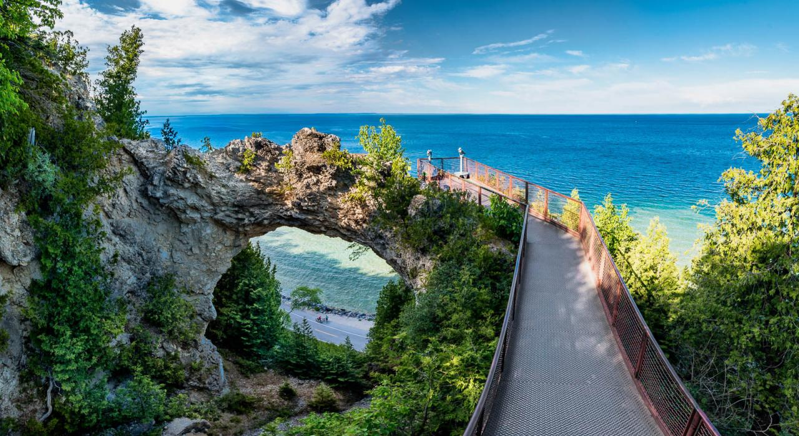

Gallery

Mackinac Island is a place where the horse is king, where the streets have been car-free for over 100 years. Mackinac Island is a place full of history where centuries-old forts and ancient rock formations have stood the test of time, and where it seems as though time stands still. But more than a place to go, Mackinac Island is a state of mind.
Visit Us To know More